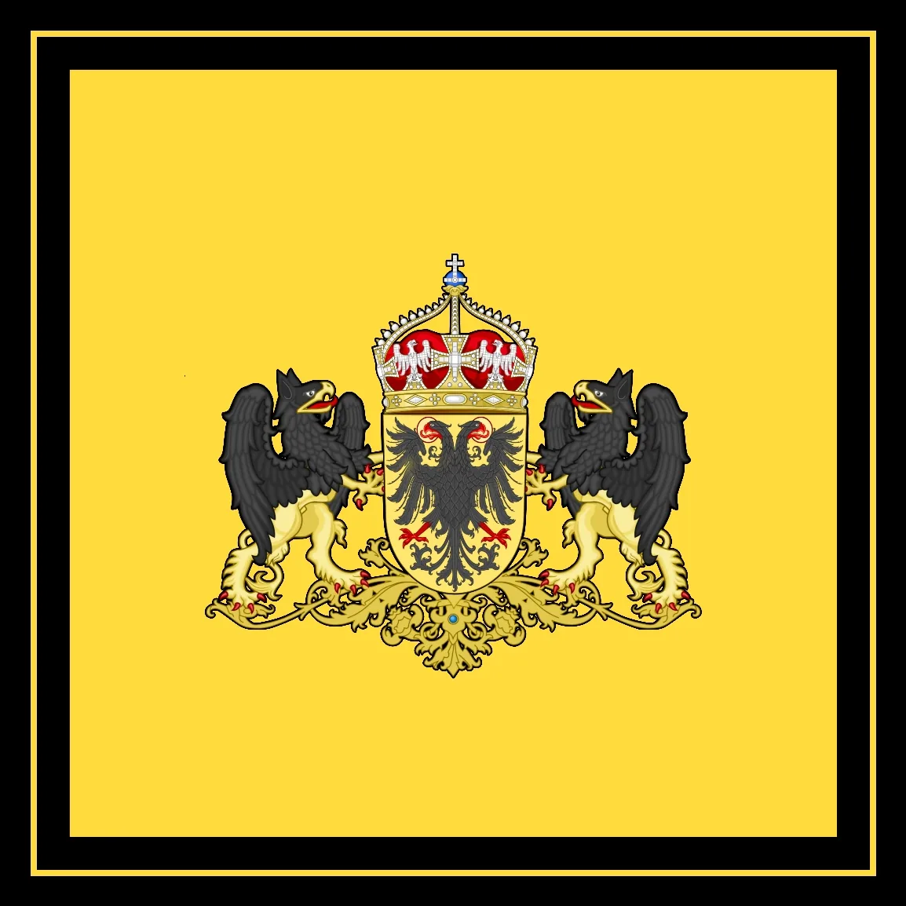

Imperial Ombudsman
Ernst August VI.
His Majesty Ernst August VI., King and Prince-Elector of Hanover and Brunswick-Lüneburg, temporarily Hand of the Emperor and Imperial Ombudsman of the Imperium Germanicum.
Since 15 October 2026 the King of Hanover has been temporarily the Hand of the Emperor and thus the second-highest officeholder of the Empire. His predecessor Karl V. lost all titles and offices by decree of 15 October 2026.
He is one of the 9 Prince-Electors and also Chairman of the Imperial Diet.

– Enlarge imageThe seat of work of the Senate administration of His Majesty's government, which the Hand of the Emperor heads, is located in the Berlin Palace in the imperial capital.